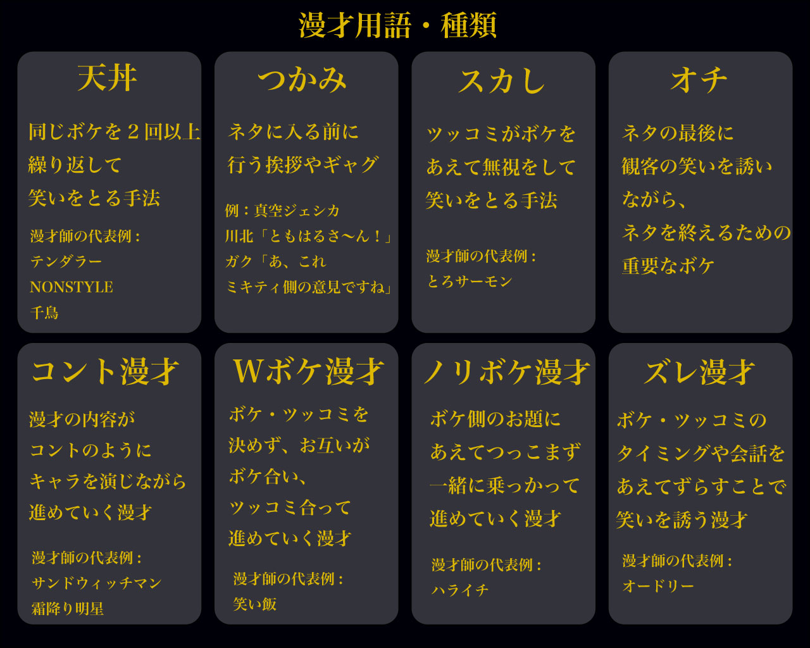
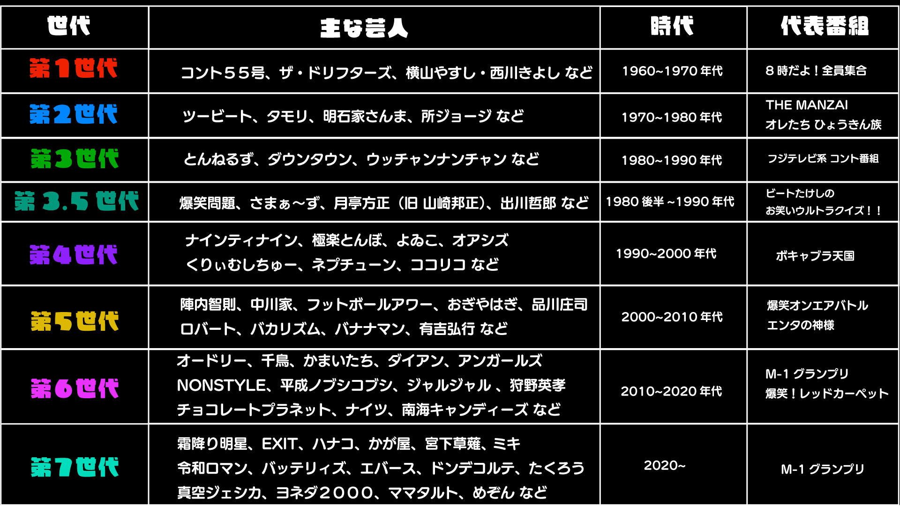

概要
”漫才”を感覚で語られてきた笑いのテクニックを データとして見える形にすることで、 漫才を好きな人にも詳しくない人にも理解してもらう。 審査方法：ネタ秒数、ボケ数、ボケ間隔、ツッコミ数、ツッコミ間隔 で判断
ネタ時間は4〜5分とする 審査方法：ネタ秒数、ボケ数、ボケ間隔、ツッコミ数、ツッコミ間隔 で判断
漫才とは
主に二人の芸人がマイクの前で滑稽な会話を行い、 観客を笑わせる日本の伝統的な演芸。

漫才用語・種類
漫才を構成する重要な技法や種類を紹介。

第◯世代
当サイトでは独自の時代分けをしているが、 一般的に有名な時代ごとの特徴や漫才師を紹介。